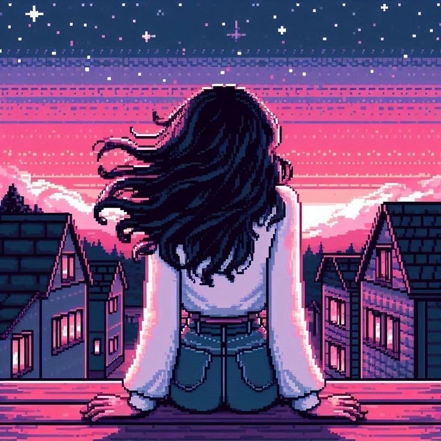

Фритрек и нулевой спринт: Подготовка к работе

<Знакомство и цели>
Это было самое начало пути. На этом этапе важно было проникнуться основами и настроиться на учёбу. И, возможно, подумать, как новые знания могут повлиять на ваше будущее.
Новые знания дадут мне возможность развиваться в этой сфере и найти работу.